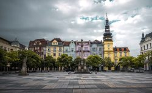

Krakkó, Lengyelország
Sétálj a hangulatos óvárosban, és fedezd fel a Wawel királyi várat.
UTAZZ VELÜNK
Válaszd ki a következő úti célod, mi pedig kényelmesen odaviszünk.
Sétálj a hangulatos óvárosban, és fedezd fel a Wawel királyi várat.

Ismerd meg a modern városi életet és a sziléziai kultúrát.

Élvezd a tóparti hangulatot és a történelmi belváros szépségét.

Fedezd fel a hangulatos főteret és a Szent Erzsébet-dómot.

Barangolj a Dráva-parti sétányon és a barokk erődvárosban.

Fedezd fel a folyóparti kávézókat, hidakat és a várnegyedet.

Találkozik a gazdag zenei örökség, a kultúra és a pezsgő városi élet.

Fedezd fel az ipari örökséget és a város pezsgő kulturális életét.
Élvezd a Duna-parti panorámát, a történelmi fürdőket és a belvárost.